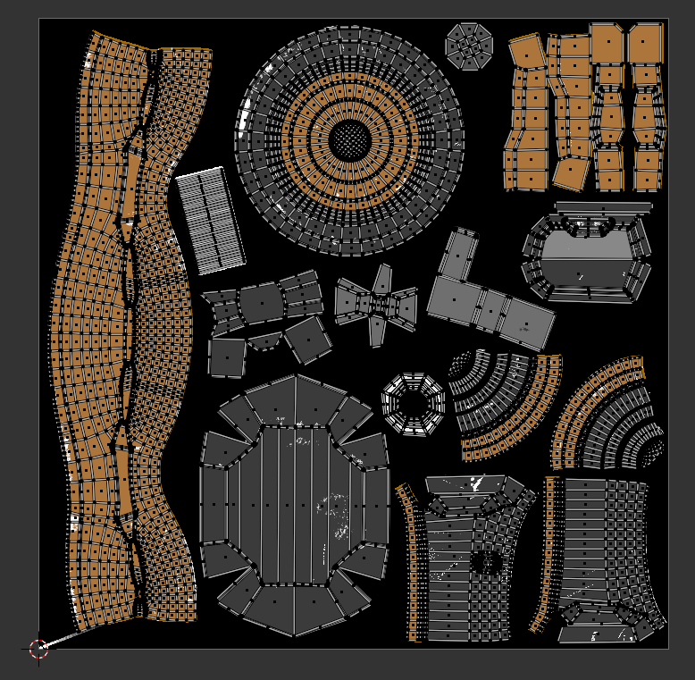

Sci-Fi Generator
This model was developed as a single object, baking down multiple alpha layers of textures onto one set of textures. This keeps draw calls at a minimum.

The original shader is complex, with a couple of PBR shaders that are mixed using a separate texture map:
These are ultimately baked down into a single PBR material with albedo, metallic, roughness and normal channels. I use the SimpleBake add-on to speed up my workflow.
This shows the albedo channel with the UV map:
